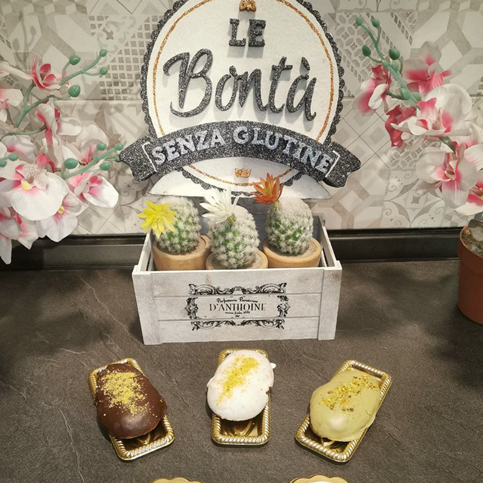
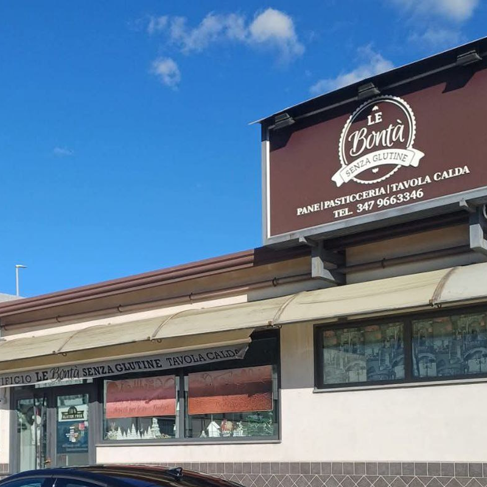
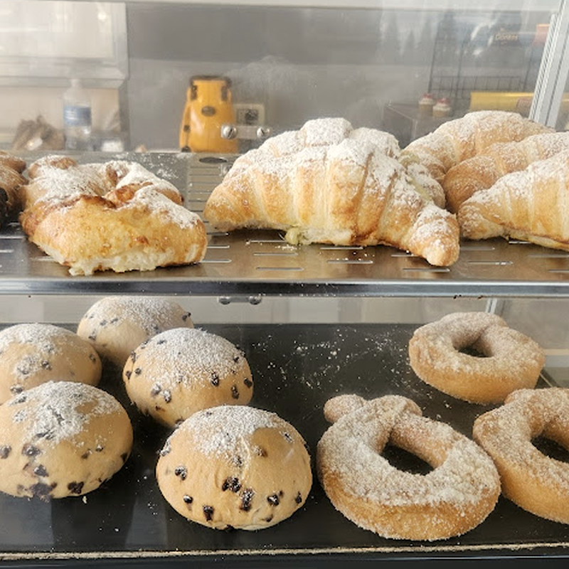

panificio


Le bontà senza glutine
Descrizione
Il panificio Bontà senza glutine è rinomato nel quartiere. E' un panificio/ pasticceria/ gelateria / bar con piccoli tavolini da appoggio. Comodissimo per chi è in viaggio, si trova all'uscita di San Giovanni Galermo, di fronte il supermercato Decò, sempre cordiali, accontentano le richieste dei clienti con esigenze particolari come la produzione di arancini senza lievito



Informazioni

Indirizzo
Via Galermo, 300, Catania
Telefono
+39 347 966 3346
Budget
5-10 € / persona
Zona
Zona Galermo, vicino Maxistore Decò
Orari
Lun
Chiuso
Mar, Mer, Gio, Ven, Sab, Dom
08–14:00; 17–20:30
Parcheggio
Sì, molto ampio
Servizi igienici
Non sono presenti i servizi igienici